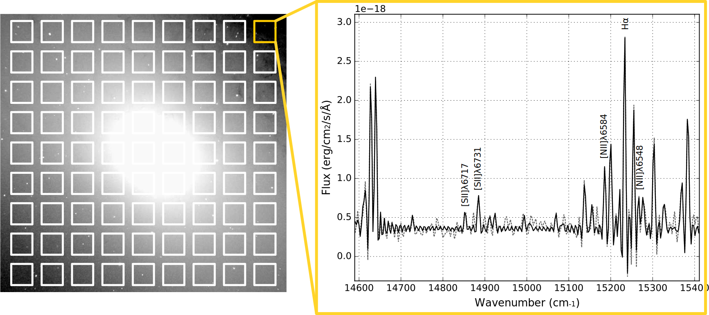
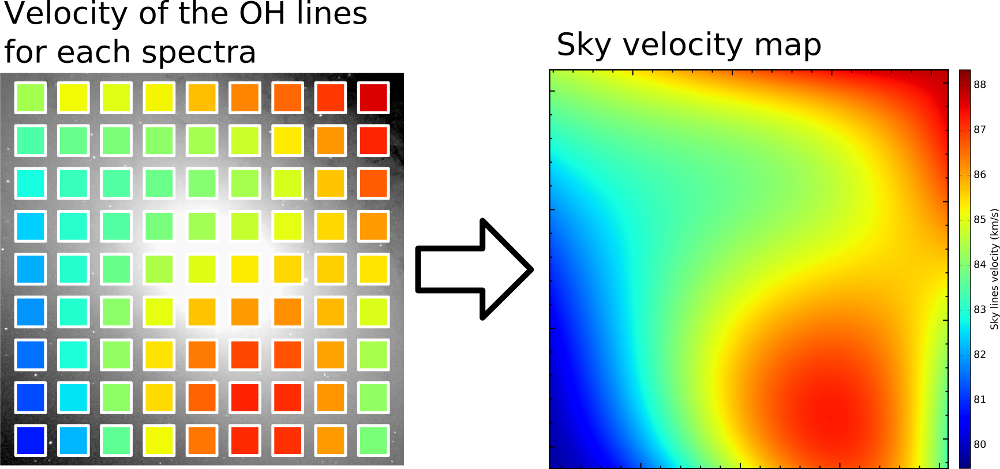

Wavelength recalibration with the sky lines (Mendel OH bands)¶
Introduction¶
Data can be recalibrated in wavelength easily when one OH sky lines are visible in most parts of the field of view. Cubes observed in the red part of the spectrum (e.g. SN3 filter) are especially interesting in this respect.
The general idea is to extract integrated spectra at different positions in the field of view and measure the velocity of the sky lines (which should be 0 if the calibration was perfect) (see Martin et al. 2017a).

Then the correction map can be infered at each pixel by fitting a model.

The calibration model is based on a simple modeling of the interferometer.

First step: checking the calibration¶
[1]:
# import base class for the manipulation of a SITELLE spectral cube: HDFCube
from orcs.process import SpectralCube
import pylab as pl
[2]:
# load spectral cube
cube = SpectralCube('/home/thomas/M31_SN3.merged.cm1.1.0.hdf5')
master.fa09a|INFO| Cube is level 3
master.fa09a|INFO| shape: (2048, 2064, 840)
master.fa09a|INFO| wavenumber calibration: True
master.fa09a|INFO| flux calibration: True
master.fa09a|INFO| wcs calibration: True
[3]:
# extract and plot a spectrum of a large integrated region. Sky lines should be visible.
spectrum = cube.get_spectrum(50, 50, 20)
pl.figure(figsize=(10,6))
spectrum.plot()
pl.xlim(14500, 15500)
[3]:
(14500, 15500)

fitting the sky spectrum¶
we can also fit the integrated spectrum because there si a large number of sky lines and because we are not interested in a perfect fit (only the velocity is required), we can use a simple ‘sinc’ model with a fixed fwhm. All the lines are set to share the same velocity parameter and we set an inital guess of the velocity around 80 km/s. This general bias of 80 km/s is known (Martin et al. 2017b) and comes from the error made on the real wavelength of the calibration laser (which is falsely considered to be at 453.5 nm).
[4]:
sky_lines_cm1 = cube.get_sky_lines()
fit_res = spectrum.fit(sky_lines_cm1,
fmodel='sinc',
pos_def='1',
fwhm_def='fixed',
nofilter=False,
pos_cov=80)
print('Velocity: ', fit_res['velocity_gvar'][0])
pl.figure(figsize=(10,6))
spectrum.plot()
fit_res.get_spectrum().plot(c='red')
pl.xlim(14500, 15500)
Velocity: 77.5(1.5)
[4]:
(14500, 15500)

Second step: Mapping the sky velocity¶
Warning: this process can take a long time because a spectrum is extracted and fitted for each point of a 40x40 grid by default. For a basic example it is recommended to limit the number of grid division to 10x10.
[5]:
cube.map_sky_velocity(80, div_nb=10, exclude_reg_file_path='m31_exclude.reg') # the mean velocity bias is set around 80 km/s
master.fa09a|INFO| fitting process already done ! set no_fit=True if you do not want to redo it
master.fa09a|INFO| X range: 0 2048, Y range: 0 2064
master.fa09a|INFO| Radius: 30
master.fa09a|INFO| excluding region from file m31_exclude.reg
master.fa09a|INFO| 58 regions to fit
master.fa09a|INFO| 88 sky lines to fit
loading region: Shape : circle ( Number(1861.81818),Number(1876.36364),Number(30.00000) )
master.fa09a|INFO| Init of the parallel processing server with 32 threads
[==========] [100%] [completed in 2m51s]
master.fa09a|INFO| Closing parallel processing server
master.fa09a|INFO| parallel processing closed
master.fa09a|INFO| Velocity of the first line (km/s): 78.9(2.2)
master.fa09a|INFO| Velocity of the first line (km/s): 76.3(2.0)
master.fa09a|INFO| Velocity of the first line (km/s): 71.8(1.9)
master.fa09a|INFO| Velocity of the first line (km/s): 70.3(2.4)
master.fa09a|INFO| Velocity of the first line (km/s): 71.7(2.8)
master.fa09a|INFO| Velocity of the first line (km/s): 67.1(2.6)
master.fa09a|INFO| Velocity of the first line (km/s): 65.2(2.4)
master.fa09a|INFO| Velocity of the first line (km/s): 59.3(2.4)
master.fa09a|INFO| Velocity of the first line (km/s): 61.5(2.3)
master.fa09a|INFO| Velocity of the first line (km/s): 61.1(2.3)
master.fa09a|INFO| Velocity of the first line (km/s): 75.1(2.0)
master.fa09a|INFO| Velocity of the first line (km/s): 76.0(2.1)
master.fa09a|INFO| Velocity of the first line (km/s): 77.7(2.3)
master.fa09a|INFO| Velocity of the first line (km/s): 72.4(3.2)
master.fa09a|INFO| Velocity of the first line (km/s): 69.7(3.3)
master.fa09a|INFO| Velocity of the first line (km/s): 56.5(2.8)
master.fa09a|INFO| Velocity of the first line (km/s): 68.3(3.0)
master.fa09a|INFO| Velocity of the first line (km/s): 62.0(3.2)
master.fa09a|INFO| Velocity of the first line (km/s): 62.5(2.6)
master.fa09a|INFO| Velocity of the first line (km/s): 60.2(2.3)
master.fa09a|INFO| Velocity of the first line (km/s): 77.9(2.2)
master.fa09a|INFO| Velocity of the first line (km/s): 77.9(2.4)
master.fa09a|INFO| Velocity of the first line (km/s): 73.6(2.7)
master.fa09a|INFO| Velocity of the first line (km/s): 48.6(2.8)
master.fa09a|INFO| Velocity of the first line (km/s): 62.4(2.8)
master.fa09a|INFO| Velocity of the first line (km/s): 78.3(2.3)
master.fa09a|INFO| Velocity of the first line (km/s): 74.6(2.8)
master.fa09a|INFO| Velocity of the first line (km/s): 103.1(3.4)
master.fa09a|INFO| Velocity of the first line (km/s): 68.7(2.7)
master.fa09a|INFO| Velocity of the first line (km/s): 76.1(2.9)
master.fa09a|INFO| Velocity of the first line (km/s): 78.8(3.3)
master.fa09a|INFO| Velocity of the first line (km/s): 67.5(2.4)
master.fa09a|INFO| Velocity of the first line (km/s): 79.9(3.2)
master.fa09a|INFO| Velocity of the first line (km/s): 74.7(3.1)
master.fa09a|INFO| Velocity of the first line (km/s): 70.6(2.2)
master.fa09a|INFO| Velocity of the first line (km/s): 79.5(3.0)
master.fa09a|INFO| Velocity of the first line (km/s): 66.5(2.6)
master.fa09a|INFO| Velocity of the first line (km/s): 68.1(2.2)
master.fa09a|INFO| Velocity of the first line (km/s): 73.3(3.1)
master.fa09a|INFO| Velocity of the first line (km/s): 59.8(2.7)
master.fa09a|INFO| Velocity of the first line (km/s): 66.9(2.4)
master.fa09a|INFO| Velocity of the first line (km/s): 70.8(1.9)
master.fa09a|INFO| Velocity of the first line (km/s): 81.4(3.2)
master.fa09a|INFO| Velocity of the first line (km/s): 80.2(3.7)
master.fa09a|INFO| Velocity of the first line (km/s): 70.7(3.1)
master.fa09a|INFO| Velocity of the first line (km/s): 77.3(2.6)
master.fa09a|INFO| Velocity of the first line (km/s): 70.1(1.8)
master.fa09a|INFO| Velocity of the first line (km/s): 74.8(1.4)
master.fa09a|INFO| Velocity of the first line (km/s): 79.9(3.2)
master.fa09a|INFO| Velocity of the first line (km/s): 78.4(3.0)
master.fa09a|INFO| Velocity of the first line (km/s): 77.9(3.4)
master.fa09a|INFO| Velocity of the first line (km/s): 77.4(3.2)
master.fa09a|INFO| Velocity of the first line (km/s): 76.2(3.6)
master.fa09a|INFO| Velocity of the first line (km/s): 74.8(2.9)
master.fa09a|INFO| Velocity of the first line (km/s): 75.3(2.2)
master.fa09a|INFO| Velocity of the first line (km/s): 75.7(1.7)
master.fa09a|INFO| Velocity of the first line (km/s): 71.6(1.6)
master.fa09a|INFO| Velocity of the first line (km/s): 74.3(1.3)
master.fa09a|INFO| x: [ 186.18181818 186.18181818 186.18181818 186.18181818 186.18181818
186.18181818 186.18181818 186.18181818 186.18181818 186.18181818
372.36363636 372.36363636 372.36363636 372.36363636 372.36363636
372.36363636 372.36363636 372.36363636 372.36363636 372.36363636
558.54545455 558.54545455 558.54545455 558.54545455 558.54545455
744.72727273 744.72727273 744.72727273 744.72727273 930.90909091
930.90909091 930.90909091 1117.09090909 1117.09090909 1117.09090909
1303.27272727 1303.27272727 1303.27272727 1489.45454545 1489.45454545
1489.45454545 1489.45454545 1675.63636364 1675.63636364 1675.63636364
1675.63636364 1675.63636364 1675.63636364 1861.81818182 1861.81818182
1861.81818182 1861.81818182 1861.81818182 1861.81818182 1861.81818182
1861.81818182 1861.81818182 1861.81818182]
master.fa09a|INFO| y: [ 187.63636364 375.27272727 562.90909091 750.54545455 938.18181818
1125.81818182 1313.45454545 1501.09090909 1688.72727273 1876.36363636
187.63636364 375.27272727 562.90909091 750.54545455 938.18181818
1125.81818182 1313.45454545 1501.09090909 1688.72727273 1876.36363636
187.63636364 375.27272727 562.90909091 1688.72727273 1876.36363636
187.63636364 375.27272727 1688.72727273 1876.36363636 187.63636364
375.27272727 1876.36363636 187.63636364 1688.72727273 1876.36363636
187.63636364 1688.72727273 1876.36363636 187.63636364 1501.09090909
1688.72727273 1876.36363636 187.63636364 375.27272727 1313.45454545
1501.09090909 1688.72727273 1876.36363636 187.63636364 375.27272727
562.90909091 750.54545455 938.18181818 1125.81818182 1313.45454545
1501.09090909 1688.72727273 1876.36363636]
master.fa09a|INFO| v: [ 78.86042362 76.2582753 71.82992727 70.32555007 71.72235552
67.14847511 65.20581426 59.34883958 61.47513547 61.12081898
75.14513547 76.0081303 77.70637615 72.44596251 69.74664224
56.45854195 68.31005925 62.01759568 62.49686679 60.21924715
77.91238292 77.94153777 73.6394465 48.57688216 62.35858405
78.27470008 74.63956925 103.07600508 68.67205024 76.14311239
78.83157028 67.46578524 79.91450518 74.74830252 70.61836475
79.51063809 66.50691762 68.11838885 73.28617653 59.77590267
66.89597323 70.75022847 81.37248121 80.17863546 70.68674844
77.32174855 70.06751036 74.78571896 79.90117383 78.43339076
77.92255972 77.35418943 76.19160053 74.84503818 75.31922486
75.6812475 71.59869116 74.28001552]
master.fa09a|WARNING| /home/thomas/Astro/Python/ORB/Orcs/orcs/utils.py:212: RuntimeWarning: invalid value encountered in greater
vel[vel > np.nanpercentile(vel, 95)] = np.nan
master.fa09a|INFO| First laser wavelentgh calibration estimation: 543.3701006659054 nm
master.fa09a|INFO| Angle at the center of the frame: 15.495422711743403
master.fa09a|INFO| > Binning calibration map
master.fa09a|WARNING| /home/thomas/Astro/Python/ORB/Orb/orb/utils/image.py:1074: RuntimeWarning: Mean of empty slice
return np.squeeze(np.nanmean(np.nanmean(im_view, axis=3), axis=1))
master.fa09a|INFO| > Calibration laser map fit
master.fa09a|INFO| > First fit on the central portion of the calibration laser map (30.0% of the total size)
master.fa09a|INFO| > Calibration laser map fit parameters:
distance to mirror: 263936699.3150021 cm
X angle from the optical axis to the center: 0.0 degrees (Fixed)
Y angle from the optical axis to the center: 15.495422711743405 degrees
Tip-tilt angle of the detector along X: 0.0 degrees (Fixed)
Tip-tilt angle of the detector along Y: 0.0 degrees (Fixed)
Rotation angle of the detector: 0.0 degrees (Fixed)
Calibration laser wavelength: 543.3701006659054 nm (Fixed)
Error on fit: mean -1.4861024538773338e-15, std 1.5695392288219445e-07 (in nm)
Error on fit: mean -8.204918445399005e-13, std 8.665581121772023e-05 (in km/s)
master.fa09a|INFO| > Second fit on the central portion of the calibration laser map (30.0% of the total size)
master.fa09a|INFO| > Calibration laser map fit parameters:
distance to mirror: 270667216.2431192 cm
X angle from the optical axis to the center: 0.0 degrees
Y angle from the optical axis to the center: 15.495422710465332 degrees
Tip-tilt angle of the detector along X: 0.0 degrees
Tip-tilt angle of the detector along Y: 0.003496501989666831 degrees
Rotation angle of the detector: 0.0 degrees (Fixed)
Calibration laser wavelength: 543.3701006659054 nm (Fixed)
Error on fit: mean -3.4870814500274624e-09, std 1.5305104139895723e-07 (in nm)
Error on fit: mean -1.9252521140309393e-06, std 8.450099179807189e-05 (in km/s)
master.fa09a|INFO| > Third fit on a larger portion of the map (50.0% of the total size)
master.fa09a|INFO| > Calibration laser map fit parameters:
distance to mirror: 270667216.2431192 cm
X angle from the optical axis to the center: 0.0 degrees
Y angle from the optical axis to the center: 15.495422710465332 degrees
Tip-tilt angle of the detector along X: 0.0 degrees
Tip-tilt angle of the detector along Y: 0.0 degrees
Rotation angle of the detector: 0.0 degrees (Fixed)
Calibration laser wavelength: 543.3701006659054 nm (Fixed)
Error on fit: mean -3.487084368513622e-09, std 2.5708928457980605e-07 (in nm)
Error on fit: mean -1.925253725355977e-06, std 0.00014194153355037787 (in km/s)
master.fa09a|INFO| > Zernike polynomials fit of the residual wavefront
master.fa09a|WARNING| <string>:6: DeprecationWarning: object of type <class 'float'> cannot be safely interpreted as an integer.
master.fa09a|WARNING| /home/thomas/Astro/Python/ORB/Orb/orb/ext/zern.py:300: FutureWarning: `rcond` parameter will change to the default of machine precision times ``max(M, N)`` where M and N are the input matrix dimensions.
To use the future default and silence this warning we advise to pass `rcond=None`, to keep using the old, explicitly pass `rcond=-1`.
wf_zern_vec = np.linalg.lstsq((zern_basismat[:, grid_vec] * weight).T, wf_w.ravel())[0]
master.fa09a|INFO| Standard deviation of the residual: 7.789107164675645e-11
master.fa09a|INFO| Median relative error (err/val)): 0.01%
master.fa09a|INFO| > final error (std on 50.0% of the total size): 1.606e-11 nm, 8.865e-09 km/s
master.fa09a|INFO| > New calibration laser map fit parameters:
distance to mirror: -282031697934.2675 cm
X angle from the optical axis to the center: 0.0 degrees
Y angle from the optical axis to the center: 15.569878356725365 degrees
Tip-tilt angle of the detector along X: 0.0 degrees
Tip-tilt angle of the detector along Y: 7.218995916765718 degrees
Rotation angle of the detector: 0.0 degrees
Calibration laser wavelength: 543.1740675641056 nm
master.fa09a|INFO| fit residual std (in km/s):
master.fa09a|INFO| median error on the data (in km/s)
master.fa09a|INFO| Data written as ./M31_SN3/M31_SN3.calibration_laser_map.fits in 0.16 s
master.fa09a|INFO| Data written as ./M31_SN3/M31_SN3.wavefront_map.fits in 0.14 s
master.fa09a|INFO| Data written as ./M31_SN3/M31_SN3.skymap.fits in 0.14 s


Ouputs¶
The most important output is the skymap which gives the modelized velocity of the sky in the field of view and permit to correct the measured velocities in the cube.This map is named *skymap.fits. You can add it to the obtained velocity maps to correct the velocity.
In this particular case this is M31_SN3.1.0.ORCS/M31_SN3.1.0.skymap.fits
The histogram above shows the difference between the measured velocity and the fitted velocity at each valid data point.
You can see that there are some data points at the center of the field which were excluded from the fit. This comes from the fact that M31 is very bright at the center and the sky lines are lost in the noise produced by the high continuum background. Modelling the interferometer makes possible to estimate the velocity of the lines at the center of the field where no velocity measurement could be done. And the result is stricking, it works particularly well even if the case of M31 (Martin et al. 2017a)